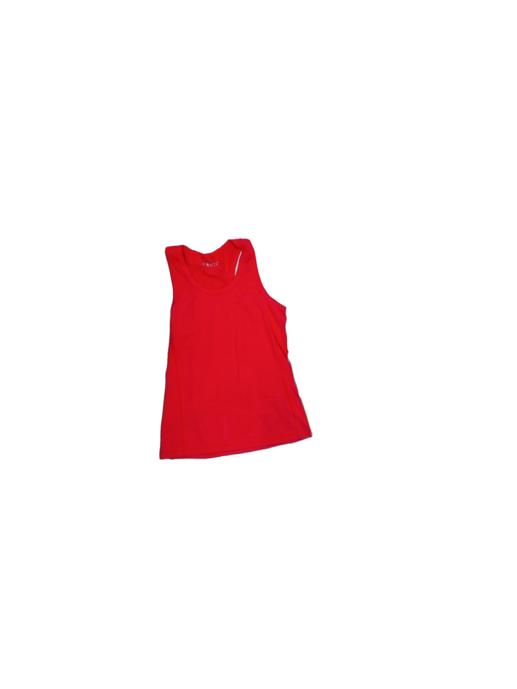

Introduction
In this post, we’ll explore our one of a kind dataset that is focused on second-hand clothing classification.
Dataset Overview
The dataset contains 31,638 clothing items and was created as part of the Vinnova funded project “AI for resource-efficient circular fashion”. It’s a collaboration between RISE Research Institutes of Sweden AB, Wargön Innovation AB, and Myrorna AB, with additional support from the EU project CISUTAC.
The main purpose of this dataset is to help classify garments into various categories to determine their future use:
- Reuse
- Export (reuse outside Sweden)
- Recycling
- Repair
- Remake
- Thermal waste
Interactive Dataset Explorer
The following is a version of the dataset that only uses the front imageYou can explore the dataset directly through the Hugging Face dataset viewer:
You can try simple search queries like “Shirt” or use the DuckDB interactive SQL editor to explore the dataset: SELECT * FROM train WHERE type = 'Shirt' AND condition = 4; for example will return all “Shirt” items that have a condition of 4 (i.e. “very good”). You might need to login to your huggingface account to use SQL queries. In my experience, the SQL queries run slowly.
Loading the Dataset
To work with this dataset programmatically, you can use the Hugging Face datasets library. Here’s how to load and explore the data:
from datasets import load_dataset
# Load the dataset
dataset = load_dataset("fnauman/fashion-second-hand-front-only-rgb")
# Access the training split
train_dataset = dataset["train"]
# Print basic information
print(f"Dataset size: {len(train_dataset)} images") # 28248
print(f"Features: {train_dataset.features}") # 19
# Access an example
example = train_dataset[0]
image = example["image"]
# # Display the image - notebook
# from IPython.display import display
# display(example["image"])
print(f"Brand: {example['brand']}, Category: {example['category']}")
# Output: Brand: Soc (stadium), Category: LadiesThe image is:

Dataset Features
The dataset provides RGB images of clothing items taken from the front view. Each image is labeled with 18 distinct attributes that can be used for:
- Training computer vision models for clothing classification: type, category, etc.
- Detecting condition and damage.
- Building image-based and text-based search systems.
License and Attribution
The dataset is released under CC-BY 4.0 license. When using this dataset, make sure to properly attribute the zenodo version:
Nauman, F. (2024). Clothing Dataset for Second-Hand Fashion (Version 3) [Data set]. Zenodo. https://doi.org/10.5281/zenodo.13788681
Next Steps
In future posts, we’ll explore:
- Building a classification model using this dataset
- Creating a simple web application for clothing classification
Stay tuned for more insights into sustainable fashion and AI!
Citation
@online{nauman2025,
author = {Nauman, Farrukh},
title = {Exploring the {Second-Hand} {Fashion} {Dataset}},
date = {2025-02-06},
url = {https://fnauman.github.io/second-hand-fashion/posts/2025-02-06-data-exploration/},
langid = {en}
}